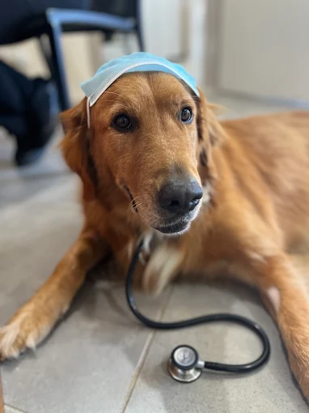
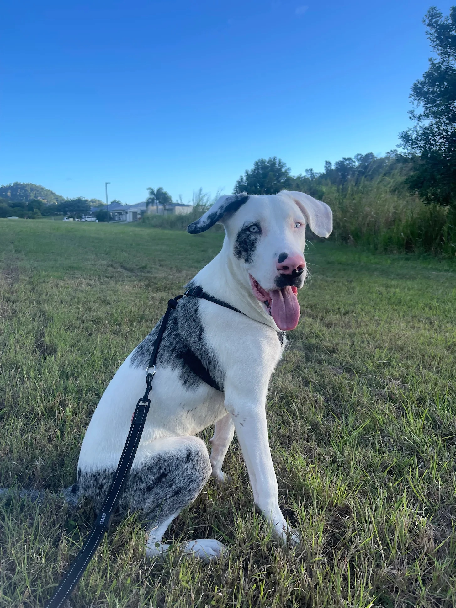
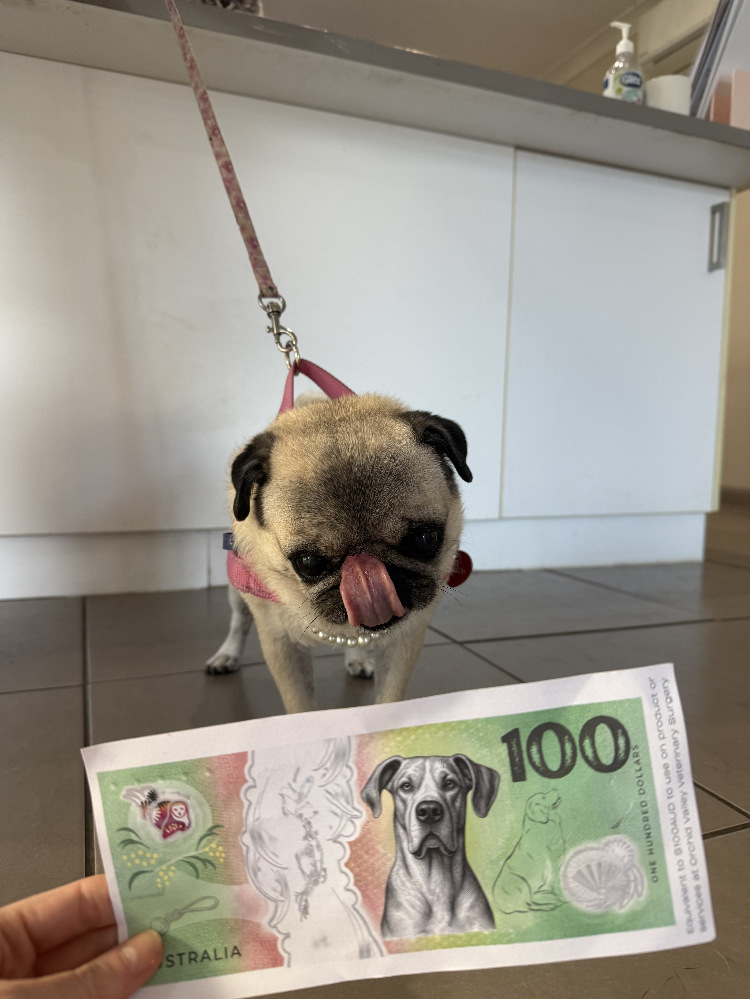
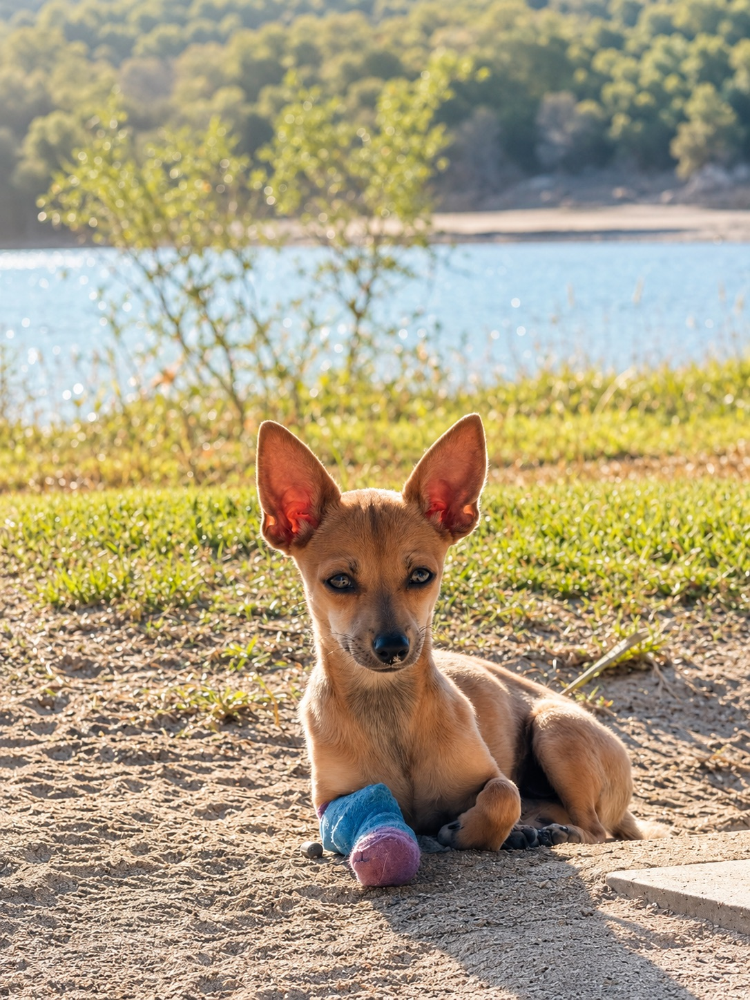
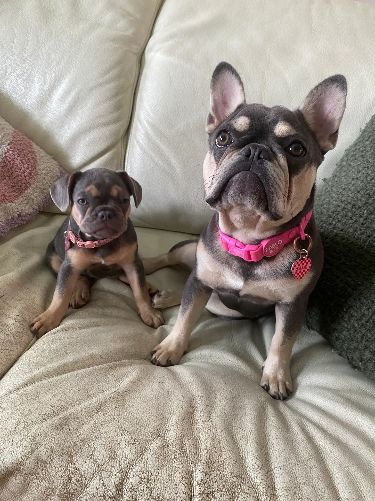

Modern, professional and affordable veterinary care for the animals you love. Open 6 days a week, available on call 24/7.


Our dedicated staff are all avid animal lovers who bring genuine care to every consultation. We treat your pets like our own.
We've been an integral part of Cannonvale for over 30 years, helping thousands of cats, dogs, guinea pigs, birds and even a few snakes.
Modern examination rooms, diagnostic machines and pharmaceutical stores for on-the-spot assistance.
We help clients make well-informed decisions with professional guidance and honest recommendations.
Comprehensive examinations to keep your pet in peak condition year-round.
Cat and dog vaccination programs to protect against serious diseases.
Year-round prevention and treatment for fleas, ticks and heartworm.
Radiography, ultrasonography and in-house clinical pathology.
Permanent identification for your pet's safety and peace of mind.
Dental health checks and professional cleaning for dogs and cats.
Safe and compassionate desexing procedures for cats and dogs.
Specialist bone and joint procedures to restore mobility and comfort.
A wide range of internal soft tissue surgical procedures.
Eye surgery and treatments to preserve your pet's vision.
Extractions and advanced dental procedures under anaesthesia.
Urgent surgical intervention when your pet needs it — any day.
Professional grooming to keep your pet clean, healthy and comfortable.
Safe and stress-free nail trimming for dogs and cats of all sizes.
Expert guidance on managing behavioural challenges in your pet.
Tailored dietary recommendations for every life stage and condition.
Holistic dog care guidance from puppies through to senior years.
Specialist advice tailored to the unique needs of cats at every age.
We understand your pet's health doesn't follow a 9-to-5 schedule. That's why we offer 24/7 on-call availability for the Cannonvale community.
Contact UsOpen 6 days a week so your pet can be seen when they need care.
Extended hours for urgent situations that can't wait until morning.
Surgical and medical emergency capability across extended hours.
The team at Airlie Beach Vets have always gone above and beyond for Marble. Gentle, caring and always so informative and quick to take action. Thanks again team!

We've been bringing Maisey here for over 10 years. Absolutely wonderful staff who genuinely love animals. Wouldn't go anywhere else in the Whitsundays.

Incredibly professional and affordable. They explained everything clearly and our puppy was so comfortable. Highly recommend!

Excellent all-round experience. The team at Airlie Beach Vets took exceptional care of our little Chihuahua, Jerry, while we were visiting the Whitsundays. The vets and vet nurses responded to an emergency with professionalism, compassion, and a genuinely caring approach.

Always feel very confident that my girls are getting the absolute best care from everyone at Orchid Valley. You can just tell they all love animals and have such patience with them. They all really go above and beyond. Would recommend to anyone. Thank you so much for taking such good care of our girls
